对白优先，响度按平台，真峰值留余量
先让对白在正常监听下清楚，再把整体响度对到平台目标；不要用拉总音量救对白。导出前看真峰值，给编码留 1–2 dB 余量，避免平台二次压缩削顶。
不同平台目标不同，交付前查当前规格；同一母版投多个平台时，分别导出版本，不要一版通投。
边界
响度不是越响越好。把音乐拉满、对白靠字幕，短期刺激，长期没人愿意听完。对白听不清时，先回混音，不要只加总增益。
现场
平台常用 -14 LUFS、真峰值 -1 dB；先混到目标，再留 0.5 到 1 dB 余量，别靠压限器硬顶。
DIAGRAM / LOUDNESS
响度：平台目标与真峰值

怎么做
- 先混到平台目标，常用 -14 LUFS。
- 真峰值压到 -1 dB，再留 0.5 到 1 dB 余量。
- 不要靠压限器硬顶，回到对白和动态检查。
别踩
别把响度当竞争力；压限器压扁了，对白会更累。
图片说明：本页封面、图解与步骤图是编辑示意或结构图，不是本页实测照片，也不能当作器材测试证据；AI 辅助生成的图会在图注标出。判断器材或画面，以正文的测试条件与现场记录为准。